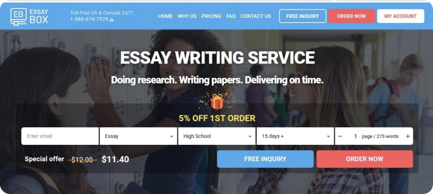
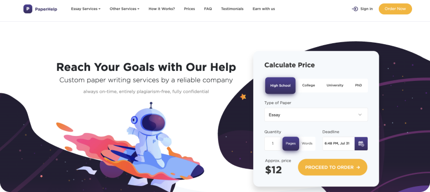

How to Find a Best Essay Writing Service?
-
1Do not be cheap I was a student and I know how you feel. Often, it is your first attempt of being financially independent. It is hard and challenging. Anyway, do not go cheap. The best essay writing services site has a great team of writers. They gathered them for years. They earn their authority through hard work and thousands of hours spent on improvement. They know their job better than anyone. And, finally, they respect their colleagues. Such essay superheroes can’t cost cheap. Their job impacts your current life directly. And it can impact your future, too. Keep that in mind before making your choice. The best rated essay writing service will cost you money, but it is worth it.
-
2Pay attention to communication No wonder why nowadays good customer service and human department specialists are in high demand. Proper communication is a key to success. The best online essay writing service always offers their clients round-o-clock customer support, the ability to call the hotline, to write emails, or contact the customer service consultant via chat box. The more channels of communication there are the better. Though number matters, the form of communication plays a major role. It has to be direct, respectful, and clear for both sides. If you feel that there is something you are missing, ask a question. And expect to get an honest answer. In case there is no such, think twice about assigning your paper to this service. Or go away. Also, look at the Terms and Conditions page, read Refund Policy. There shouldn’t be variant-readings in these documents.
-
3Make sure there are different types of payments accepted It is a very important point! I didn’t put in on the first or second places just because it doesn’t sound as serious as it is. You can simply scroll it like obvious information. I am happy if it is for you! However, many do such a pity mistake like transferring their money to suspicious bank accounts or paying online on unsecured pages. These are the signs of scam! The best essay writing service costs a lot. So, please, do not get into this trap. Be aware! If the best US based essay writing service you have chosen offers 3 or more payment methods it is most likely you can trust it. Again, check the reviews if you have doubts.
-
4Do not fool yourself The best essay writing service providers are realists. And they won’t lie. For instance, it is impossible to write a 25-page term paper in 12 hours. Thus, you won’t find such promises on one of the best essay writing websites. Even the most experienced and talented writers can’t do it. And if they state they can, they lie. And if they lie, the company they work for is lying, too. And if they are lying about the deadlines, who know what more could they lie about? Have adequate expectations and be ready for the appropriate expenses. You can’t get quality, cheap price and fast delivery at once. Something from that list will be missing anyway.
-
5Play big: choose the best essay writing service in the world Perhaps, it is not fair. And, maybe, it is not the only way to make the right decision. But it increases your chances to get what you want significantly. So, what is the best essay writing service? The big and experienced one. Big players are the most reliable ones on the market as they have the most experienced staff and the widest range of papers they can deliver. If they are a long time in business, they have already got in so many different arguments that your issue would be a routine for them. And it is not bad. It is the experience they have got. They know what to do to make their clients satisfied and loyal. Their mechanisms are almost automatized. They don’t suggest. They guarantee. It is a shopping mall in the world of academic writing and you can find there anything, in one place. Also, you can look for some comfy niche boutique where an assistant buyer will bring the biggest smile on your face. Indeed, it is an exciting adventure… that often leaves you with nothing in the end. Sometimes the best is the worst enemy of the good. So, trying to answer the question “how to find best essay writing service?”, first of all, be reasonable.
Red Flags When Choosing the Best Professional Essay Writing Service
Zero Reviews
A website that has no reviews is a place that either is scared of being evaluated or hides its real points. Also, it might mean that website doesn’t access third parties to do audits and avoid any independent verification. It is an example of an untrustworthy companyTo find the best essay writing service you have to look at how a reliable website reacts to the bad reviews. Do they provide solid feedbacks? Are they solving the issues? Are their clients ignored or treated with respect? These questions will help you to understand whether the service deserves your time and attention.
Unbelievable Points
Any company that gets only 5 stars shouldn’t get your trust. It is impossible to be perfect. It is unreal! Students are different, their requirements, expectations, and attitudes are different, too. It is fine that someone wasn’t satisfied with the order completely. And this information should not be deleted. It has to be worked on.While searching the best American essay writing service for college, pay attention to that website that has points around 4 to 5 stars. Those services could be trusted, most likely.
Similar Reviews
Similar reviews help to create an engaging story, but it couldn’t be true. People who make use of, for example, the best essay writing service USA, have different thesauruses, emotional levels, use different expressions or slang. There are satisfied customers and those who didn’t like a paper that much. After all, there are assignments on physics and literature reviews. The reviews on them can’t sound the same.The reviews have to be different and have specific details. Otherwise, the website tries to convince its clients in something that doesn’t even real.
Lack of information
We write reviews when we like something very much, or we don’t like it at all. Neutral emotions don’t make us leave feedback. Thus, real reviews are emotional and contain unique details. They have to describe the process step by step, maybe the names of customer support specialists or authors that clients did or didn’t like, etc. It could even contain parts of the essay papers, citations that a student didn’t find appropriate, for instance.If you read a plain, abstract review on the best cheap essay writing service, it is written by website administration or paid. The service doesn’t want to show its real face. And it has to alert you.
The Check List before Assigning Your Paper to the Essay Writing Service
The Most Comprehensive List of the Best Essay Writing Services of 2020
Now, I would like to present to you the list of the professional essay writing services 2020 I have made use of plenty of times and can definitely recommend it. It is not a detailed list, though, as there are unique pages for each website mentioned below. There you can read the full opinions. So, please, take a look.BestEssays
BestEssays.Com is one of the most popular essay services among my friends. It offers a unique option — free features in every order. It attracts many students The best essay writing service online feature Despite the significant discount you get, it offers an impressive 3 hours delivery and pretty high quality of essay papers. I ordered there two book reviews and they were written so well that I wasn’t sure if I need to read something. Perhaps, I could keep ordering them here and save so much precious time?Sure, I didn’t do it. But it is a service all my mates have made use of at least one time. And I didn’t know anyone who had got a low grade or was disappointed on some other level. Thus, this website gets the 10th line in my private best essay writing service website list.
GrabMyEssay
For a while, this website was my favorite. They offer a 15% discount for new customers and provide you with a free plagiarism report. Unique papers at a low price stole my heart. I liked the casual tone of communication there and brief, but clear answers I get from customer support service specialists.This essay service’s main advantage is an excellent customer support team and providing fast responses to any issue occurs.
I have not ordered something from them for a while, but definitely recommend it as the friendliest best US essay writing service.

EssayBox
From what I know, these guys are the best in research papers. So, it is obvious I came to them for this kind of paper. The best thing about this service is its free inquiry option.  The best essay writing service inquiry option example The first question that popped up in your head when you are deciding to order a paper online is its cost. And it is a great idea to give customers such a simple tool.It is a usual ordering form, but without the necessity to checkout. You can check the price there and then decide. Easy and useful.
EssayThinker
I can’t say a lot about this essay service as I used it once. I don’t adore its interface. But they provided me with an excellent example of solving a math problem. Not only I received a paper done before the deadline, but I also got the comments on its solving, in case I didn’t get the logic.I appreciated this move very much. EssayThinker is a thinker, indeed. It helped me to submit my assignment on time and feel confident, too.
WriteMyEssayOnline
The main advantage of this essay writing website is the wide range of authors. And the most pleasant thing is that there is an actual list! You can go to the writers’ profiles, read the reviews, look at the samples of their work, and choose the one you liked the most. The best essay writing service for college allows choosing It is so simple, but somehow only WriteMyEssayOnline gave us such an amazing opportunity!I don’t choose the writer when I need any kind of science assignment or history essay. The writer matters to me only if I order a book review or something similar. I was satisfied with the quality of the essay I got and made some more orders later. Go for it, if you are not that good in creative writing.
SuperbPaper
SuperbPaper is one of the best affordable essay writing services on the market. Its prices start at 10$. I haven’t seen such prices since 2016. Though the prices are more than affordable, this service does its job perfectly well!They keep their promises. When I was their client, I accidentally order 3 hours deadline instead of 3 days and the amount I paid differed a lot from what I planned to pay. I created and inquiry and get a response in 5 minutes. I received my money back in 3 working days as it was written in their policy and was offered a 15% discount. Obviously, I used it. Besides that, you can look through the samples of their work just by clicking on the special button. Again, it is all about simplicity and usefulness. No additional requests are needed. Well done!

PaperHelp
From this point, I’ll be talking about the most popular services. It is not that I am a marketing victim. It is because they are the best in the business. And it is no wonder why they are on the top lists everywhere.PaperHelp states that its customer gets an individualized approach. I can assure you, you will. What is the best online essay writing service? The one that’s attentive to your needs. As soon as you place an order you’ll be connected to the customer support specialist who guides you through the process. If you need something to specify when the writer has already started writing your essay, there is no problem at all. You control the process even though you don’t involve in it. I like how they don’t distance me from my life.
The prices aren’t low. But I have no complaints. It is worth it. 
GradeMiners
I recommend using this essay service to submit difficult papers. It could be application essays, dissertations, course works. GradeMiners has the most professional and experienced team of writers. They are available 24/7 as there are writers from all over the world.Their unbelievable deadline in 1 hour blows the customer’s mind! But it is real. You can get your paper in 60 minutes if you are ready to pay an appropriate sum. Sure, it can’t be types of papers I’ve written above, but properly organized bibliography or talented speech is on the list.
TopEssayWriting
Maybe, this website is not as well-known and trusted as other 3 in my TOP 4, but it has something others don’t. This outstanding essay writing service offers its customers to work through the main message of their papers. They accept any comments and thoughts you have on the topic and they create something amazing! The best online essay writing services know what you need The admission essay I ordered felt like it was written by me like they got into my head! I suppose, some brilliant writers work here. Poets, I’d say.In my opinion, it is one of the best professional essay writing service in narrative style writing. With their help, I got into college, so I just have to mention them!
EduBirdie
I am confident all of you have heard about EduBirdie. It is the best essay writing service provider. It has earned its authority by ears of good work and customer-oriented service. The first time I made an order there was during the third year in college. They cost much, but when you came so far, you didn’t risk.EduBirdie is the best reviewed essay writing service. It is presented on the most popular third review website, reviewed by third parties almost every year, and cooperates with the professors from the world-known colleges as consultants and writers. The customers can ask for their opinion, too. And it is free. The best essay writing service online feature Despite the significant discount you get, it offers an impressive 3 hours delivery and pretty high quality of essay papers. I ordered there two book reviews and they were written so well that I wasn’t sure if I need to read something. Perhaps, I could keep ordering them here and save so much precious time? Sure, I didn’t do it. But it is a service all my mates have made use of at least one time. And I didn’t know anyone who had got a low grade or was disappointed on some other level. Thus, this website gets the 10th line in my private best essay writing service website list.
Should I Trust The Reviews 100%?
I have been asked these questions millions of times. I know that you want someone else to be responsible for your academic success. You seek someone who will be honest and direct. You need a friend. And you desperately want to hear the positive response.I have bad news. Of course, not all the reviews are real and you shouldn’t trust them all. There are plenty of scammers out there and you always have to remember that.
Before deciding on the service you want to make an order from, you have not only to read the reviews but also ask your friends about the services they made use of and make your own conclusions.
You can start with:
Looking through the samples on the websites
Looking through the list of writers
Connect with the customer support
Then, Why the Essay Writing Service Review Is So Important?
Reading reviews on the best online essay writing service in US is crucial before ordering a college paper as it protects you from scammers. People don’t write a review when the service they got was fine enough. Students leave feedback on essay writing service in two cases: This way, reviews help you to avoid scammers and choose the service that meets your expectations. Nevertheless, essay writing service reviews are helpful only if you apply the rules I mentioned when reading them:- Pay attention to reviews that score website with 4 to 5 stars
- Ignore too excited reviews as well as too negative ones
- Look for the details in the review, ignore those without them
- Check if there are reviews on the different websites
- Pay attention to feedbacks to bad reviews provided by the company
- Make sure the reviews on the best rated essay writing service are unique
How Can I Be Sure the Essay Writing Service Review Is Real?
We agreed on the major role of essay writing service reviews in choosing the essay service. Also, we understood that not all the reviews are genuine. So, there is a challenge. What to do to make sure the review is not paid? There is no a unique method. Just take the steps you are usually taking when checking any other information on the web:Google it
Just type your request like “essay writing service review” or “what is the best legitimate essay writing service?” and see what you will get. Probably, you will see a dozen of pages with reviews. Do not panic. You shouldn’t check them all. I suppose half of them will not earn your trust at first look at it. These are the reviews with plenty of grammar mistakes, too short or too long reviews, too general, too plain. As I pointed earlier, people write reviews when they are emotional. So, neutral reviews are 90% written on purpose. Ignore them.Keep looking through the pages and read carefully those reviews where some details are specified. Be very attentive to the reviews written by people with confirmed profiles. It proves they are real. Leave the tabs with such reviews open and take the next step.
Up-to-date selection
After saving the reviews that seem reliable to you, check the website they were published on. If it is a huge platform that posts many new reviews every day you can be sure the review is real and checked. The best essay writing service websites work on their online presence. But if the website is abandoned, there is one review on the website, the review is posted a few years ago, then check it one more time.For example, you can Google a few phrases from the review and check if there is the same review elsewhere on the internet. If you will find it, it means it is generated by marketing specialists. Try to Google the person that wrote this review. One way or another make sure it is unique.
Look for the opinions
The essay writing service reviews are the voices of students like you. Think about what you would write if you made use of any of the services? Would you write it is affordable and trustworthy? I don’t think so. I wrote many reviews on services I used and it was always about specifics. It could be the best quick writing essay service, or best US based essay writing service (I know, for someone it matters a lot). Some of the services are good at science assignments; others have French native speakers among their writers who deliver superb narrative essays, etc. You can meet the phrase like “it is a reliable service” on every essay writing website. It is too plain and trait. Do not believe it if you see it in the review.Essay writing service reviews shouldn’t be all the same. There should be bad or average reviews. They are opinions, too. They shouldn’t be blocked by the website. They have to be taken into consideration. Do not be afraid of bad reviews. Just make sure there are much less of them than positive ones.
How Do I Analyze Essay Writing Services?
Before I started review essay writing services on my own, I follow some of the best essay writing services reviewers. And I learned what to focus on exactly from them.There are plenty of things that impact your choice directly. And it is not just the quality of the essay. It is following the rules, privacy policy, communication culture, etc. You can’t understand if the company operates well making an order just once. After first order, you can only evaluate how the service treats a new client. It is not enough to make a thorough conclusion. Sticking to my own rules, before composing an essay writing service review I have made use of it at least 5 times. And here are the aspects that help me to make my reviews on the best essay writing service rated in most top 10 lists valuable:
-
1Reading Terms and Conditions Having opened the website landing page, I go to the Terms and Conditions page. And even at this stage, I can already see if the company is reliable and legit. If you can find the link to the mentioned page easily, it is great. It means the company has nothing to hide and is ready for dialog with the client. And if the page is hard to find, hidden or absent at all, it is a reason to doubt this website, to be more suspicious and careful.
Next, I compare different Agreements specifically learning about refund and revision policies. I look for the guarantees the companies provide if they let their clients down.
I check if there are physical offices and if the addresses are real, dial their phone numbers, communicate via chatbox. I make sure everything is working appropriately and there is no evidence of a scam. -
2Testing communication culture and customer support I evaluate the promptness of the answers I get via chat box, email, by phone. I test different messengers. I pretend to have new comments during my assignments is already has been working on. I order revisions and sometimes request money back.
I don’t break the rules. All I do is testing the system. And then share my results with you. -
3Familiarizing with the writers’ profiles The top essay writing services usually connect a client with the writer directly. It is the most convenient way to work on the essay for both sides. To make sure a person who will be responsible for your assignments is professional, I check writers’ profiles; consider notes left by previous clients. If it is possible, I talk to writers. I examine their professionalism; check the information about their degrees established on the website.
There are hundreds of cases when the student gets an essay of very low quality and doesn’t receive her money back. Checking the writers’ personalities is very important. It helps to understand how professional the essay writing service is. -
4Working with the feedbacks This point is a part of a communication policy. Every professional business makes mistakes. But it is not about making mistakes. It is about your reaction.
If you break your promises, you have to show your sincere regret. Then, make everything you can to fix the mistake, to leave a client satisfied in the end. If a company doesn’t show such behavior, it doesn’t deserve your attention. -
5Deadlines and prices No matter how important communication culture or writers’ personalities could be, prices and deadlines play a major role. Students can’t pay much and have limited time. So, I pay attention to this part the most.
I check if the essay writing service always meets the deadline. I find out how objective they are when proposing extremely short deadlines. Prompt professional help is the main purpose of the essay writing services. So, if they understand that, they get on top. If not, I eliminate them from my reviews as well as other professional essay writing service reviewers.
Analyzing the Services on Your Own: What to Consider?
Using professional reviewers’ websites, you will probably know about the credibility and level of college papers the companies deliver. You will know about the prices, advantages and disadvantages, terms and conditions, meeting the deadlines, etc. But sometimes you will need something that no review describes. You will look for something so unique that no one ordered before you. In this case, you have to use only your logic and intelligence to make the right choice.Here are some recommendations from my side:
-
1The essay writing service reviews and ratings are essential. Before you assign your paper to any website, learn what other people share about them. Find feedbacks, opinions, comments, and anything people write about the company. There will be fakes among them, but you are already prepared for smart scanning.
-
2If you have no time at all, still do not order your paper from the first essay writing service you have found. Anyway, it is better to make the research and pay a little more for a shorter deadline than to give your money to a scammer.
-
3After choosing a service, wait. Before making an order, check its competitors. It is very likely that they offer similar prices, but they could have better options!
-
4Look through the free samples a company publishes on the website. They have to be perfect, not less. It is the advertising of the essay writing service and it has to shine. If you catch any grammar mistakes, typos, misspellings, run away. If a company doesn’t care about advertising, it doesn’t care about anything.
-
5Make sure the service offers a refund and other options that protect you from fraud. Always be considerable about money even if you’ve got enough. Scammers don’t miss the opportunity to use the person who doesn’t care about the money.
Rely on Yourself
No doubt, there is a trusted essay writing service best at academic writing help you need. I believe you will easily find even a few in your area after some seeking. However, never make someone responsible for your life.Looking through the essay writing service reviews is extremely helpful for students. You don’t need to make all the work from scratch. The professional essay writing reviewers have already done most of the work for you. They work to ease your studying and life in general. But you have to understand that your life is in your hands. So, consider every word you read carefully. Think twice before starting cooperation with any of the essay writing essay services. Analyze, listen, and make your own choice. Even the best reviewed essay writing service US based might not meet your expectations. There is nothing horrible about it. We all have different views and preferences which are mirrored in the essays we write or order. It is crucial to be ready for the unexpected turn of events. It is a nice tip for everyday life, too, I suppose.
Choose smart and good luck with your current and further academic writing challenges!